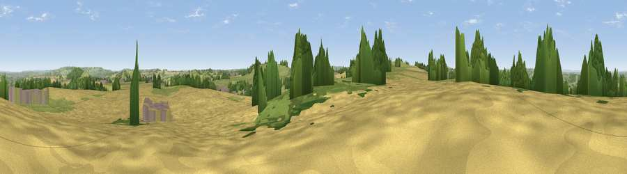

Viewpoint near Hunstrete
#16802 in England · top 31% of its area beats it · near HunstreteThe view, rendered

A 360° render of this exact spot computed from the terrain model, tree cover and land cover — summer colours, afternoon light, calibrated against photographs of famous viewpoints. Real trees, hedges and buildings will differ in detail.
The panorama
Grey silhouette: terrain skyline in each direction (720 bearings, Earth curvature and refraction included). Dashed green: skyline with trees (+15 m) and buildings (+8 m) as obstacles. Blue strip: how far the ground is visible on each bearing.
Where the view opens
Wedge length = distance to the farthest visible ground on that bearing (vegetation-aware). Rings at 10, 25 and 50 km.
What fills the view
41% cropland · 35% grassland · 21% woodland · 3% built-up
Angular shares of the visible panorama (visual magnitude), not map area. Landscape diversity 0.50 (0–1 Shannon).
Key numbers
More beautiful places nearby
The staircase of upgrades: each row has a higher view potential than everything closer. Driving times are estimates from straight-line distance, calibrated against real road routing — check an actual route before setting out.
| Place | Direction | Drive | Score |
|---|---|---|---|
| Viewpoint near Chelwood | SW · 1 km | ~4 min | 70.6 |
| Viewpoint near Stanton Prior | NE · 3 km | ~8 min | 70.7 |
| Viewpoint near Norton Malreward | NW · 8 km | ~15 min | 72.9 |
| Viewpoint near Kelston | NE · 8 km | ~17 min | 74.2 |
| Viewpoint near North Stoke | NE · 10 km | ~19 min | 75.4 |
| Hanging Hill | NE · 11 km | ~21 min | 76.4 |
| Beacon Batch | WSW · 17 km | ~29 min | 79.4 |
| Bleadon Hill [Loxton Hill] | W · 29 km | ~45 min | 79.6 |
51.34856, -2.50573 · source: screening · position refined by local search. Computed location — check access rights before visiting.